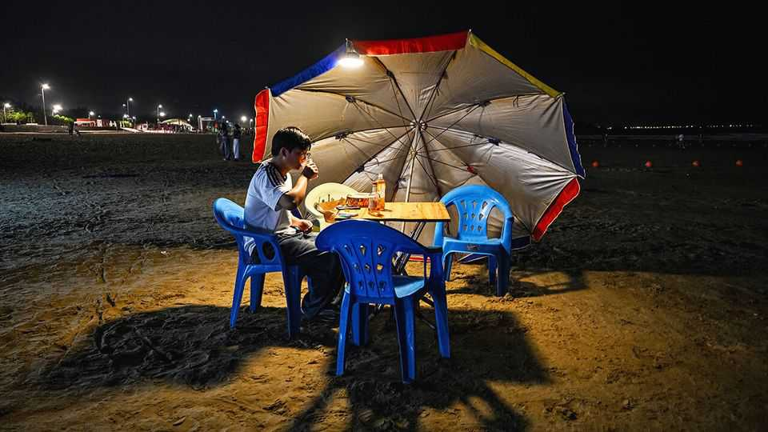
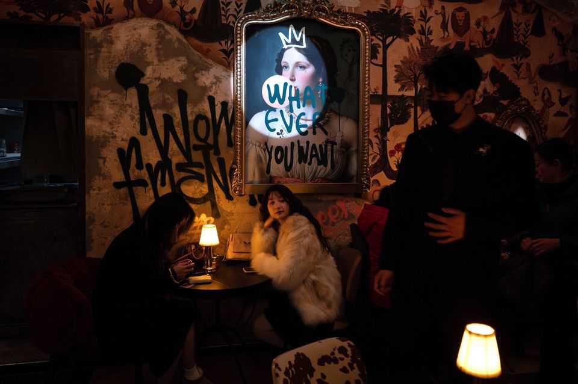

China is dealing with its own manosphere
But online misogyny is only one corner of a much bigger problem
July 16th 2026

To get a flavour of how some university-educated male influencers in China think, log on to Zhihu, a social-media platform, and find the account of someone who calls himself Peng Huitang. Mr Peng has 50,000 followers and regularly spews vitriol at modern women. “Young women brainwashed by feminist thinking became increasingly man-hating, which then evolved into the idea that men are born owing women something,” he rants.
Another man, who goes by the name Ying Yueyong, in a post viewed 4m times on Bilibili, a video platform, issued “a rallying cry to men to no longer remain silent in the face of years of bullying and to rise up in resistance”. He slips in some of the nationalism popular with such influencers: “Extreme feminism is a common choice favoured by academic cliques and foreign forces.” Welcome to the Chinese manosphere. (Neither Mr Peng nor Mr Ying accepted a request for an interview.)
Like most countries, China has lots of online communities of unmarried men. Some are angry nationalists. Some are hardcore misogynists. They post messages claiming that society favours women, who they believe should stay in the kitchen and the bedroom. There is plenty of overlap. Many of them remain anonymous. Tellingly, however, there is no direct translation of the word “manosphere” in Chinese. That is because the online anger of Chinese men is only the most hostile expression of a more widespread frustration felt by tens of millions of men, online and offline. Traditional patriarchal values remain much more deeply rooted than in the West, and feminism is a more recent phenomenon. Involuntarily celibate men are struggling to adapt to the changing dynamics of gender relations.
In Western democracies, right-wing populists aside, there is plenty of opprobrium towards the manosphere. In China, traditional masculinity and anti-feminist rhetoric have long had substantial support from the Communist Party. The Communist Youth League has said “extreme feminism” (which it does not define, but generally includes anything that encourages activism or conflict and discourages women from getting married and having children) is a “cancer” afflicting the internet. Despite the fact that Mao Zedong famously said that “women hold up half the sky”, the party has regularly cast feminism as a destabilising, insidious foreign force.
China does have unique problems. The most obvious is the effect of its one-child policy, which ran from 1980 to 2015. This led to the abortion of many female fetuses and thus a surplus of adult men today, many of whom struggle to couple up. The number of surplus men, known as guanggun, or bare branches, is huge. By 2027 there will be 22.5m more marriage-age men than women. That translates into 119 men of marriage age for every 100 women of that age; in 2012 the ratio was 105 to 100.
Young women are also increasingly well educated: they often have more qualifications than men. By 2024 they made up 51% of higher-education students, 14 percentage points more than 20 years earlier. This younger generation of women benefited from the one-child policy, as resources were funnelled towards only daughters. And, while urban Chinese women have been able to shed more of their burdensome traditional roles, men are expected to continue upholding many of their own. To marry, a man must first own a flat; many will be asked to pay a “bride price” to the bride’s family.
Lan Zhaoxia, a matchmaker in Langfang, just outside Beijing, says the demographic shift has thrown the marriage market off kilter. She builds databases of young men and women that include details such as their parents’ pension status. Now, however, the odds are so stacked against rural male migrants that she does not accept them as clients. “Since all the village girls have gone to school, there are now more ordinary boys in rural areas and more outstanding girls in the city,” she says. Women want to marry up, while men want to marry down or just find an obedient girl. “The gap is huge.”

One of those frustrated rural men is Mr Zhao, who is tucking into a lunch of noodles near the car-parts factory in Hebei province where he works. The unmarried 27-year-old often scrolls through social-media posts arguing about the status of men and women. He points to a big debate about a widely publicised ruling on marital rape last year. “When something happens, it’s always the woman who’s portrayed as the wronged party.” Another discussion prompts him to ask why, if the sexes are equal, he should have to give up his bus seat to a woman. He appears resigned to the fact that he may not find a wife.
Debates about China’s manosphere focus a lot on economic issues. Poorer men like Mr Zhao face immense economic pressure. Online, they use the term baojinbi, or “exploding gold coins”, to describe women wringing them dry by demanding expensive dates, gifts and bride prices. Research by Minhee Chae of Nankai University and Zhang Dandan of Peking University found that around a third of young male migrants who intend to marry think their chances of doing so by the age of 30 are only 50% at best. They estimate that a young migrant worker would have to save every penny for six years to afford the average bride price of 127,300 yuan ($18,780).
The backlash is not just about women, says Sara Liao of Pennsylvania State University. Men want “to vent their anger, frustrations, precarities regarding their life status, regarding the general economic and cultural environment”. The safest outlet is attacking the opposite sex; doing so aligns with what the government itself is saying.
Under President Xi Jinping, “sissy men” have been banned from appearing on television, while traditional marriage and child-rearing have been promoted. Belatedly, however, leaders are also becoming aware that intensifying xingbie duili, or “gender antagonism”, may be setting the scene for broader social instability. They are trying to tackle some of the root causes of male anger, for instance by intensifying campaigns against the practice of bride prices. Most of all they worry about plunging marriage and birth rates. In the first quarter of this year China registered just 1.7m marriages, half as many as in the same period in 2017.
And it is not just the government that blames feminism and gender antagonism on foreign forces. Griffin Liu, a sports teacher, who is 35, is still looking for a wife. “Chinese people receive Chinese education and ideas,” he says. But now the internet is bringing new Western thinking. “The two are in conflict.”
Gender antagonism is frequently in the news. Last year, a legal ruling in favour of a male Wuhan University student accused by a female student of masturbating in front of her became a lightning rod for men’s concerns about feminist overreach and women’s concerns about a lack of clarity in defining sexual harassment. In 2024, after a gaming influencer nicknamed “fat cat” committed suicide, netizens “doxxed” his former girlfriend and cast her as a gold-digger who sent him to his grave.
In a country where much is censored online, misogyny is less likely to be silenced. Instead online censors are more likely to target feminist posts that are judged to be advocating buhun buyu (unmarried and childless) lifestyles. Last year the cyberspace regulator’s campaign to crack down on harmful content listed “extreme feminism”, including posts that promoted singledom or gender antagonism. Weibo, China’s answer to X, last year added “inciting gender antagonism” (usually blamed on feminists) as grounds for reporting content; the company said it punished 15,000 accounts for this offence and deleted 640,000 relevant posts.
Xiong Xiaoneng, a 40-year-old consultant in Beijing, is one more man yet to find a wife. He partly blames the rise of microdramas, which he says create unrealistic expectations. He thinks women want to be like Wu Zetian, a seventh-century empress portrayed as the archetypal girl boss on screen. His hometown of Guilin has seen a boom in businesses catering to single women, such as shows with shirtless male performers. Men like him are trapped unhappily in their singlehood, he says, while women seem to be enjoying theirs. ■
Subscribers can sign up to Drum Tower, our new weekly newsletter, to understand what the world makes of China—and what China makes of the world.